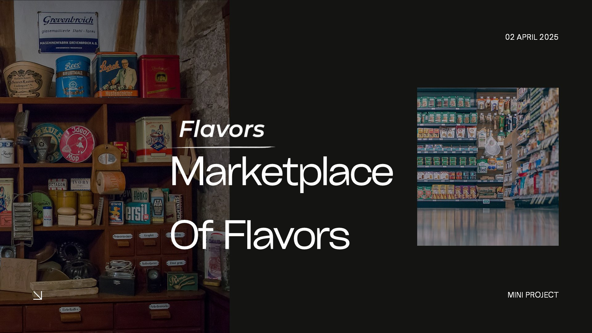

I'm a Computer Science graduate (Informatics) from Universitas Brawijaya, with additional specialization in Data Science & Machine Learning from Rakamin Academy. I'm experienced in transforming complex, large-scale datasets into actionable business insights.
My work spans multiple business domains — finance, marketing, customer analytics, and workforce retention. I currently hold three active roles: building the SPMS monitoring dashboard for 1,619+ active telecom tower sites across Papua, monitoring 3G/4G network SLA performance at CV Nusa Papua, and developing an internal Android app at PT. Duta Hita Jaya.
I build lightweight desktop apps (Tauri + Rust, ~5MB vs ~150MB Electron), write Python and SQL for analytics, and develop Android tools with Kotlin and Jetpack Compose. My interest lies in building interpretable solutions that simplify complexity and translate data into clear strategic direction.
End-to-end predictive modeling on a 287-employee dataset with 25 features. Identified high-risk employees through engagement scores, tenure, and workload indicators before resignation occurs. Logistic Regression selected for interpretability over tree-based models.
Unveiled the generational gap in adventure travel ad engagement. Challenged the "young = engaged" assumption — discovered older, lower-frequency internet users click more. Random Forest: 94%, Logistic Regression (scaled): 96% accuracy.

Customer segmentation via K-Means on 2,240 profiles across 30 attributes. Identified 4 personas: Gourmet Explorers, Digital Diners, Classic Connoisseurs, and Premium Palates — each with distinct marketing strategies. Silhouette score: 0.313.
End-to-end EDA and modeling on 466,285 LendingClub records. Applied SMOTE for class imbalance, feature engineering, and redundancy removal. XGBoost AUC-ROC: 0.9872. Logistic Regression (95% accuracy) selected for transparency and interpretability.
SQL-based ETL pipeline integrating transaction, product, and branch data. Developed key financial metrics (net sales, gross profit %, net profit). Built Tableau dashboard for executive decision-making across Indonesia's leading pharma company (2020–2023).
Sales performance analytics for a robotics and drone marketplace. Constructed master table from four relational sources, built Looker Studio dashboards for total sales, product categories, and city-level revenue with seven strategic recommendations.
Designed and built the internal SPMS monitoring dashboard for BTS Tower projects across Papua. Built a cross-platform desktop app using Tauri (Rust) + vanilla JS — ~5MB executable vs ~150MB with Electron. Integrated real-time Excel parsing (SheetJS) to monitor 1,619+ active sites with zero backend infrastructure. App reads live from a master Excel database; no manual data entry required.
Monitor, analyze, and report the performance of 3G/4G network infrastructure using SLA metrics (Availability, Accessibility, Retainability). Responsible for identifying network issues, generating performance reports, and supporting operational reliability of telecom sites. Also conducts site surveillance through CCTV and on-ground reports.
Building an internal Android app (Kotlin + Jetpack Compose) to centralize access to company management review data. Includes hierarchical navigation, login system, Google Sheets integration, and optimized UX for multi-division access.
End-to-end EDA and modeling on 466,285 loan records. Applied SMOTE for class imbalance, feature engineering, and redundancy removal. Developed Logistic Regression, Random Forest, and XGBoost models — achieving AUC-ROC of 0.9872. Balanced accuracy (95%) with interpretability, justifying Logistic Regression for transparent decision-making.
Built a SQL-based ETL pipeline integrating transaction, product, and branch data. Developed key financial metrics (net sales, gross profit %, net profit) to support pricing and revenue strategies. Built an analysis-ready dataset and Tableau dashboard for executive decision-making.
Integrated, analyzed, and visualized historical sales data to uncover meaningful patterns and support strategic decision-making. Focused on customer behavior, product performance, and regional sales to identify opportunities for growth and retention.
Focus in Data Science and Analytics. Foundation across machine learning, database systems, software engineering, and statistical analysis. Runner-Up at Startup Academy Program Kreativitas Mahasiswa: Road to Rector Cup 2018.
Intensive program covering end-to-end data science workflow: preprocessing, feature engineering, machine learning, model evaluation, and data storytelling. Certificate of Completion issued.
Open to data science roles, BI analyst positions, freelance analytics, and collaborations. Based in Bekasi, Indonesia — available remotely.
brambsns@gmail.com